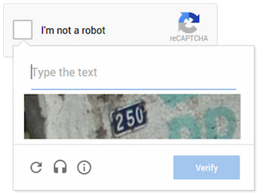

Convolutional Neural Networks (CNNs) are commonly used for digit identification. However distortions, rotations, scaling, or noise in the digit's image can drastically increase the error rate in CNN digit identification. Spatial Transformer Networks (STNs) can fix these issues in an image, and thus this project seeks to determine the impact of coupling STNs with CNNs in a digit-identification process.
As motivation, the figure shown below depicts a building street number. The digits in this image are scaled such that they don't fill the entire image, and they are rotated. If using only a CNN, these digits would be most likely misidentified, but hopefully in conjunction with an STN, the digits will be identifiable.
